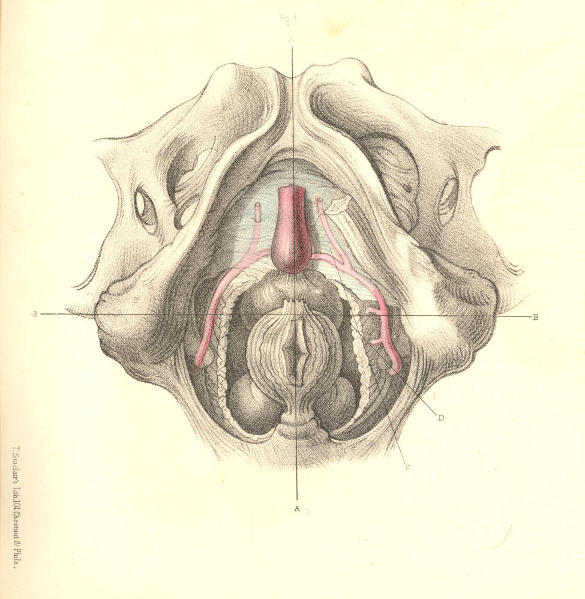
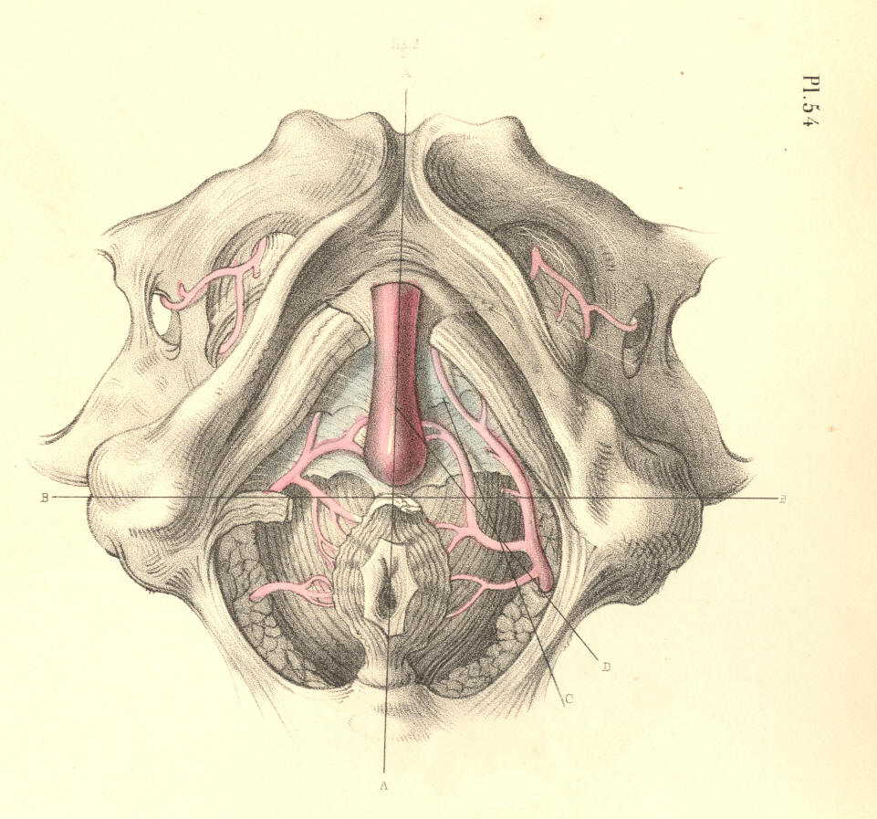
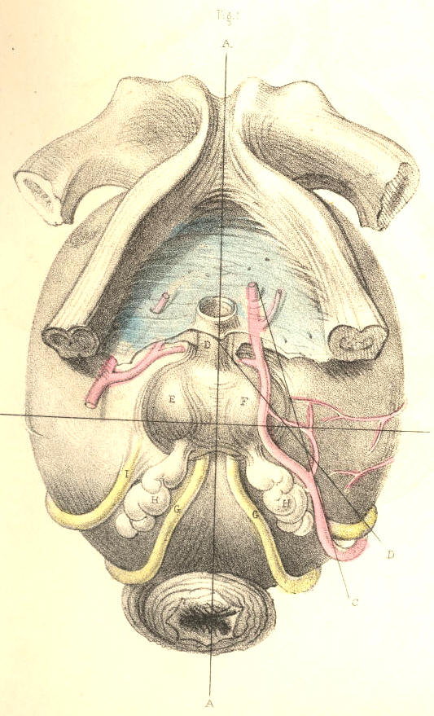
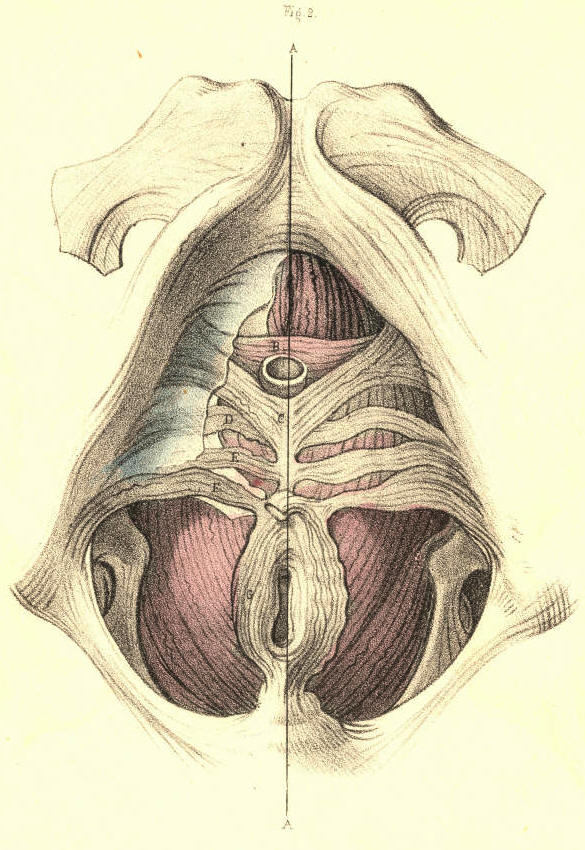
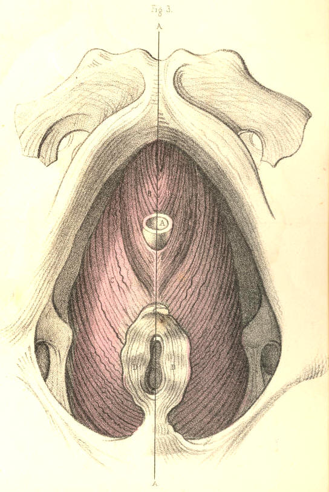
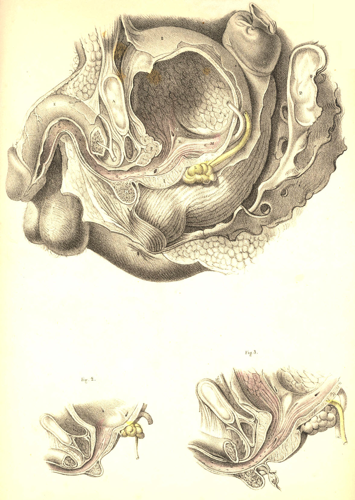

SURGICAL ANATOMY by JOSEPH MACLISE
COMMENTARY ON PLATES 54, 55, & 56.
THE SURGICAL DISSECTION OF THE MALE BLADDER AND URETHRA.--
LATERAL AND BILATERAL LITHOTOMY COMPARED.
Having examined the surgical relations of the bladder and adjacent
structures, in reference to the lateral operation of lithotomy, it
remains to reconsider these same parts as they are concerned in the
bilateral operation and in catheterism.
Fig. 1, Plate 54, represents the normal relations of the more important
parts concerned in lithotomy as performed at the perinaeal region. The
median line, AA, drawn from the symphysis pubis above, to the point of
the coccyx below, is seen to traverse vertically the centres of the
urethra, the prostate, the base of the bladder, the anus, and the
rectum. These several parts are situated at different depths from the
perinaeal surface. The bulb of the urethra and the lower end of the
bowel are on the same plane comparatively superficial. The prostate lies
between these two parts, and on a plane deeper than they. The base of
the bladder is still more deeply situated than the prostate; and hence
it is that the end of the bowel is allowed to advance so near the
pendent bulb, that those parts are in a great measure concealed by
these. As the apex of the prostate lies an inch (more or less) deeper
than the bulb, so the direction of the membranous urethra, which
intervenes between the two, is according to the axis of the pelvic
outlet; the prostatic end of the membranous urethra being deeper than
the part near the bulb. The scalpel of the lithotomist, guided by the
staff in this part of the urethra, is made to enter the neck of the
bladder deeply in the same
direction. On comparing the course of the
pudic arteries with the median line, A A, we find that they are removed
from it at a wider interval below than above; and also that where the
vessels first enter the perinaeal space, winding around the spines of
the ischia, they are much deeper in this situation (on a level with the
base of the bladder) than they are when arrived opposite the bulb of the
urethra. The transverse line B B, drawn in front of the anus from one
tuber ischii to the other, is seen to divide the perinaeum into the
anterior and posterior spaces, and to intersect at right angles the
median line A A. In the same way the line B B divides transversely both
pudic arteries, the front of the bowel, the base of the prostate, and
the sides of the neck of the bladder. Lateral lithotomy is performed in
reference to the line A A; the bilateral operation in regard to the line
B B. In order to avoid the bulb and rectum at the median line, and the
pudic artery at the outer side of the perinaeum, the lateral incisions
are made obliquely in the direction of the lines CD. In the bilateral
operation the incision necessary to avoid the bulb of the urethra in
front, the rectum behind, and the pudic arteries laterally, is required
to be made of a semicircular form, corresponding with the forepart of
the bowel; the cornua of the incision being directed behind. In the
lateral operation, the incision C through the integument, crosses at an
acute angle the deeper incision D, which divides the neck of the
bladder, the prostate, &c. The left lobe of the prostate is divided
obliquely in the lateral operation; both lobes transversely in the
bilateral.

Plate 54, Figure 1.
Fig. 2, Plate 54.--If the artery of the bulb happen to arise from the
pudic opposite the tuber ischii, or if the inferior hemorrhoidal
arteries be larger than usual, these vessels crossing the lines of
incision in both operations will be divided. If the superficial lateral
incision C, Fig. 1, be made too deeply at its forepart, the artery of
the bulb, even when in its usual place, will be wounded; and if the deep
lateral incision D be carried too far outwards, the trunk of the pudic
artery will be severed. These accidents are incidental in the bilateral
operation also, in performing which it should be remembered that the
bulb is in some instances so large and pendulous, as to lie in contact
with the front of the rectum.

Plate 54, Figure 2.
Fig. 1, Plate 55.--When the pudic artery crosses in contact with the
prostate, F, it must inevitably be divided in either mode of operation.
Judging from the shape of the prostate, I am of opinion that this part,
whether incised transversely in the line B B, or laterally in the line
D, will exhibit a wound in the neck of the bladder of equal dimensions.
When the calculus is large, it is recommended to divide the neck of the
bladder by an incision, combined of the transverse and the lateral. The
advantages gained by such a combination are, that while the surface of
the section made in the line D is increased by "notching" the right lobe
of the prostate in the direction of the line B, the sides of both
sections are thereby rendered more readily separable, so as to suit with
the rounded form of the calculus to be extracted. These remarks are
equally applicable as to the mode in which the superficial perinaeal
incision should be made under the like necessity. If the prostate be
wholly divided in either line
of section, the pelvic fascia adhering to
the base of this body will be equally subject to danger. By incising the
prostate transversely, B B, the seminal ducts, G H, which enter the base
of this body, are likewise divided; but by the simple lateral incision D
being made through the forepart of the left lobe, F, these ducts will
escape injury. [Footnote] On the whole, therefore, the lateral operation
appears preferable to the bilateral one.
[Footnote: As to the mode in which the superficial and deep incisions in
lateral lithotomy should be made, a very eminent operating surgeon
remarks--"a free incision of the skin I consider a most important
feature in the operation; but beyond this the application of the knife
should, in my opinion, be extremely limited. In so far as I can
perceive, there should be no hesitation in cutting any part of the gland
which seems to offer resistance, with the exception, perhaps, of its
under surface, where the position of the seminal ducts, and other
circumstances, should deter the surgeon from using a cutting
instrument."--Wm. Fergusson, Practical
Surgery, 3d Am. Ed., p. 610.]

Plate 55--Figure 1.
Fig. 2, Plate 55.--The muscular structures surrounding the membranous
urethra and the neck of the bladder, and which are divided in lithotomy,
have been examined from time to time by anatomists with more than
ordinary painstaking, owing to the circumstance that they are found
occasionally to offer, by spasmodic contraction, an obstacle to the
passage of the catheter along the urethral canal. These muscles do not
appear to exist in all subjects alike. In some, they are altogether
wanting; in others, a few of them only appear; in others, they seem to
be not naturally separable from the larger muscles which are always
present. Hence it is that the opinions of anatomists respecting their
form, character, and even their actual existence, are so conflicting,
not only against each other, but against nature. In Fig. 2, Plate 55, I
have summed together all the facts recorded concerning them, [Footnote]
and on comparing these facts with what I have myself observed, the
muscles seem to me to assume originally the form and relative position
of the parts B C D E F viewed in their totality. Each of these parts of
muscular structure arises from the ischio-pubic ramus, and is inserted
at the median line A A. They appear to me, therefore, to be muscles of
the same category, which, if all were present, would assume the serial
order of B C D E F. When one or more of them are omitted from the
series, there occurs anatomical variety, which of course occasions
variety in opinion, fruitless though never ending. By that
interpretation of the parts which I here venture to offer, and to which
I am guided by considerations of a higher law of formation, I encompass
and bind together, as with a belt, all the dismembered parts of variety,
and of these I construct a uniform whole. Forms become, when not viewed
under comparison, as meaningless hieroglyphics, as the algebraic symbols
a + c - d = 11 are when the
mind is devoid of the power of calculation.
[Footnote: The part C is that alone described by Santorini, who named it
"elevator urethrae," as passing beneath the urethra. The part B is that
first observed and described by Mr. Guthrie as passing above the
urethra. The part F represents the well-known "transversalis perinaei,"
between which and the part C there occasionally appears the part E,
supposed to be the "transversalis alter" of Albinus, and also the part
D, which is the "ischio bulbosus" of Cruveilhier. It is possible that I
may not have given one or other of these parts its proper name, but this
will not affect their anatomy.]

Plate 55--Figure 2
Fig. 3, Plate 55.--The membranous urethra A is also in some instances
embraced by two symmetrical fasciculi of muscular fibres B B, which
arising from the posterior and lower part of the symphysis pubis,
descend on either side of the canal and join beneath it. The muscles B
C, Fig. 2, Plate 55, are between the two layers of the deep perinaeal
fascia, while the muscle B B, Fig. 3, Plate 55, lies like the forepart
of the levator ani, C C, behind this structure and between it and the
anterior ligaments of the bladder. [Footnote] As to the interpretation
of the muscle, I, myself, am inclined to believe that it is simply a
part of the levator ani, and for these reasons--1st, it arises from the
pubic symphysis, and is inserted into the perinaeal median line with the
levator ani; 2nd, the fibres of both muscles overlie the forepart of the
prostate, and present the same arrangement in parallel order; 3rd, the
one is not naturally separable from the other.
[Footnote: This is the muscle, B B, which is described by Santorini as
the "levator prostatae;" by Winslow as "le prostatique superieur;" by
Wilson as the "pubo-urethrales;" by Muller as not existing; by Mr.
Guthrie as forming (when existing), with the parts B C, Fig. 2, Plate
55, his "compressor isthmi urethrae;" and by M. Cruveilhier as being
part of the levator ani muscle.
"As in one case," (observes Mr. Quain,)
"I myself saw a few vertical muscular fibres connected with the
transverse compressor, it has been thought best to retain the muscle in
the text."--Dr. Quain's Anat.,
Am. Ed. vol. ii. p. 539.]

Plate 55--Figure 3
Fig. 1, Plate 56, represents by section the natural forms of the urethra
and bladder. The general direction of the urethra measured during its
relaxed state from the vesical orifice to the glans is usually described
as having the form of the letter S laid procumbent to the right side
[capital S rotated 90 degrees right] or to the left [capital S rotated
90 degrees left]. But as the anterior half of the canal is moveable, and
liable thereby to obliterate the general form, while the posterior half
is fixed, I shall direct attention to the latter half chiefly, since
upon its peculiar form and relative position depends most of the
difficulty in the performance of catheterism. The portion of the urethra
which intervenes between the neck of the bladder, K, and the point E,
where the penis is suspended from the front of the symphysis pubis by
the suspensory ligament, assumes very nearly the form of a semicircle,
whose anterior half looks towards the forepart, and whose posterior half
is turned to the back of the pubis. The pubic arch, A, spans crossways,
the middle of this part of the urethra, G, opposite the bulb H. The two
extremes, F K, of this curve, and the lower part of the symphysis pubis,
occupy in the adult the same antero-posterior level; and it follows,
therefore, that the distance to which the urethra near its bulb, H, is
removed from the pubic symphysis above must equal the depth of its own
curve, which measures about an inch perpendicularly. The urethral
aperture of the triangular ligament appears removed at this distance
below the pubic symphysis, and that portion of the canal which lies
behind the ligament, and ascends obliquely backwards and upwards to the
vesical orifice on a level with the symphysis pubis in the adult should
be remembered, as varying both in direction and length in individuals of
the extremes of age. In the young, this variation is owing to the usual
high position of the bladder in the pelvis, whilst in the old it may be
caused by an enlarged state of the prostate. The curve of the urethra
now described is permanent in all positions of the body, while that
portion of the canal anterior to the point F, which is free, relaxed,
and moveable, can by traction towards the umbilicus be made to continue
in the direction of the fixed curve F K, and this is the general form
which the urethra assumes when a bent catheter of ordinary shape is
passed along the canal into the bladder. The length of the urethra
varies at different ages and in different individuals, and its structure
in the relaxed state is so very dilatable that it is not possible to
estimate the width of its canal with fixed accuracy. As a general rule,
the urethra is much more dilatable, and capable consequently of
receiving an instrument of much larger bore in the aged than in the
adult.
The three portions into which the urethra is described as being
divisible, are the spongy, the membranous, and the prostatic. These
names indicate the difference in the structure of each part. The spongy
portion is the longest of the three, and extending from the glans to the
bulb may be said on a rough, but for practical purposes, a sufficiently
accurate estimate to comprise seven parts of the whole urethra, which
measures nine. The membranous and prostatic portions measure
respectively one part of the whole. These relative proportions of the
three parts are maintained in different individuals of the same age, and
in the same individual at different ages. The spongy part occupies the
inferior groove formed between the two united corpora cavernosa of the
penis, and is subcutaneous as far back as the scrotum under the pubes,
between which point and the bulb it becomes embraced by the accelerator
urinae muscle. The bulb and glans are expansions or enlargements of the
spongy texture, and do not affect the calibre of the canal. When the
spongy texture becomes injected with blood, the canal is rendered much
narrower than otherwise. The canal of the urethra is
uniform-cylindrical. The meatus is the narrowest part of it, and the
prostatic part is the widest. At the point of junction between the
membranous and spongy portions behind the bulb, the canal is described
as being naturally constricted. Behind the meatus exists a dilatation
(fossa navicularis), and opposite the bulb another (sinus of the bulb).
Muscular fibres are said to enter into the structure of the urethra, but
whether such be the case or not, it is at least very certain that they
never prove an obstacle to the passage of instruments, or form the
variety of stricture known as spasmodic. The urethra is lined by a
delicate mucous membrane presenting longitudinal folds, which become
obliterated by distention; and its entire surface is numerously studded
with the orifices of mucous cells (lacunae), one of which, larger than
the rest, appears on the upper side of the canal near the meatus. Some
of these lacunae are nearly an inch long, and all of them open in an
oblique direction forwards. Instruments having very narrow apices are
liable to enter these ducts and to make false passages. The ducts of
Cowper's glands open by very minute orifices on the sides of the spongy
urethra anterior to and near the bulb. On the floor of the prostatic
urethra appears the crest of the veru montanum, upon which the two
seminal ducts open by orifices directed forwards. On either side of the
veru montanum the floor of the prostate may be seen perforated by the
"excretory ducts" of this so-called gland.
The part K, which is here
represented as projecting from the floor of the bladder, near its neck,
is named the "uvula vesicae," (Lieutaud.) It is the same as that which
is named the "third lobe of the prostate," (Home.) The part does not
appear as proper to the bladder in the healthy condition, Fig. 2, Plate
56. On either side of the point K may be seen the orifices, M M, of the
ureters, opening upon two ridges of fibrous substance directed towards
the uvula. These are the fibres which have been named by Sir Charles
Bell as "the muscles of the ureters;" but as they do not appear in the
bladder when in a state of health, I do not believe that nature ever
intended them to perform the function assigned to them by this
anatomist. And the same may be said of the fibres, which surrounding the
vesical orifice, are supposed to act as the "sphincter vesicae." The
form of that portion of the base of the bladder which is named "trigone
vesical" constitutes an equilateral triangle, and may be described by
two lines drawn from the vesical orifice to both openings of the
ureters, and another line reaching transversely between the latter.
Behind the trigone a depression called "bas fond" is formed in the base
of the bladder. Fig. 2, Plate 56, represents the prostate of a boy nine
years of age. Fig. 3, Plate 56, represents that of a man aged forty
years. A difference as to form and size, &c., is observable between
both.

Plate 56--Figure 1, 2, 3
COMMENTARY ON PLATES 57
& 58